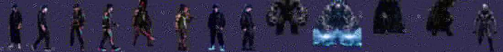

LAST WAVE
평범했던 하늘에 균열이 열리고, 서울에 워커가 쏟아진다.
다섯 중 한 명을 고르면 나머지 넷은 균열에 휩쓸린다. 혼자서, 끝까지 살아남아라.
STORY · CHARACTERS · DESIGN — 박승규 (SEUNGGYU PARK, 11) · BUILD — DAD & CLAIRE · iPhone (SpriteKit)
오프닝 보기플레이 방식
오프닝
픽셀의 평범한 아침 → 대학 정문에서 친구 넷 → 횡단보도, 하늘의 굉음 → 균열 → 워커가 쏟아진다. 29초. (영상은 게임 안에서 재생됩니다)


다섯 명 — 한 명만 남는다
정식 주인공은 PIXEL. 선택하지 않은 넷은 오프닝 직후 말없이 균열에 사라진다 (리드 디자이너의 원안).

두 가지 플레이 방식
ARENA — 3/4 시점 서울 11룸
강남대로 → 지하철 입구 → 한강 다리 → 명동 → 홍대 → 광화문 → 서울역 → 승강장 → 북촌 → 롯데타워 → 균열. 옆으로 이어진 하나의 세계를 조이스틱으로 걷고, 사거리 안이면 자동 공격. 50웨이브, 10웨이브마다 보스 THE MARKED · VOID TITAN이 점점 강해져 돌아온다.

FIRST PERSON — 잃어버린 서울
내 눈높이로 보는 서울. 강남에서 시작해 송파·여의도·마포·남산·명동·종로·북촌·동부·지하, 그리고 균열 내부까지 10챕터 · 100스테이지. 드래그로 둘러보고 워커를 탭해서 친다. 챕터마다 픽셀의 이야기가 이어진다.


재미의 장치
기(氣) 게이지 궁극기
워커를 때리면 기가 차고, 100%가 되면 X. 발동 순간 카메라 줌인 + 네임카드, 캐릭터마다 다른 볼거리.
콤보 · PERFECT
연속 처치 콤보(5마다 기 보너스), 무피해 웨이브는 PERFECT.
엘리트 워커 · 기 구슬
붉게 빛나는 강화 워커. 잡으면 기 구슬이 튀어나와 날아온다.
보스
THE MARKED — 픽셀과 같은 문양의 가면, 돌진은 시선을 돌려 피한다. VOID TITAN — 파편 낙하·보이드 임팩트, 3페이즈.
난이도
쉬움 · 보통 · 어려움 · 악몽 — 워커 체력·피해·무리 크기·기 충전 속도가 바뀐다. 선택 화면에서 고르고 기기에 저장.
크레딧 · 퀘스트
플레이로 크레딧을 벌어 캐릭터와 스킬을 열거나, 퀘스트 40개(WAVE 15 → LINE, 보스 3 → ALFRED …)로 공짜로 연다. 리드 디자이너가 정한 가격표.
만드는 방법
아빠와 아들의 토요일 프로젝트. 원안(스토리·캐릭터·적·보스·수치·상점)은 리드 디자이너가, 아트는 그의 그림을 참조로 생성·컷아웃, 코드는 SpriteKit.
원안
캐릭터 5 · 워커 7종 · 보스 2 · 스킬 키트 · 오프닝 대본 — 전부 승규의 손글씨와 그림에서 시작.
아트
캐릭터 그림 → 짧은 영상 → 프레임 컷아웃(대기·공격·걷기). 배경·이펙트 시트도 같은 방식.
게임
SpriteKit · iPhone 가로 전용 · 계정·광고·네트워크 없음.